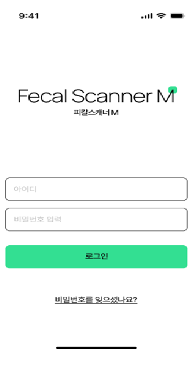
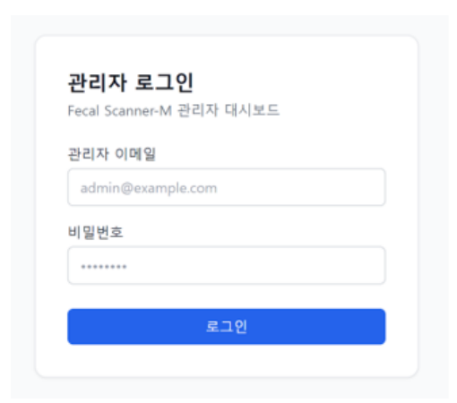

01 문제 PROBLEM
의료기기 소프트웨어는 기능이 돌아가는 것만으로는 부족합니다. 환자의 건강 정보를 지키고, 인증·세션·감사 기록·백업 같은 보안 요구를 제품에 넣은 뒤, 그것을 시험으로 증명해야 임상시험을 시작할 수 있습니다.
환자는 앱으로 사진을 찍고, 의료진은 웹에서 환자별 결과와 검사 이력을 봅니다. 분석 결과는 다른 임상 정보와 함께 해석하는 참고 정보이고, 최종 판단은 의료진이 합니다.
02 구조 ARCHITECTURE
앱, API 서버, AI 추론 서버, 보안 제출 문서를 한 저장소에서 관리했습니다.
- 환자용 앱Flutter · iOS / Android
- 의료진용 웹관리자 대시보드
- API 서버Go · Gin · PostgreSQL
- AI 추론 서버FastAPI · PyTorch
GCP · nginx(TLS) · 스토리지모델 가중치는 별도 전달
- 앱 이메일·Apple·Google·Kakao 로그인, 앱 무결성 검사, 탈옥·루팅 탐지, 강제 업데이트
- API 액세스·리프레시 토큰, 한 기기 세션, 로그인 실패 잠금, 요청 제한, 개인정보 암호화
- 운영 백업 파일 체크섬 검증 후 복구, 복구 전 현재 데이터 별도 백업
상자에 마우스를 올리면 하는 일과 만든 내용이 나오고, 예시 버튼을 누르면 요청 하나가 어떤 순서로 처리되는지 단계별로 볼 수 있습니다.
03 보안 검증 CYBERSECURITY
임상시험을 하려면 식약처 「의료기기 사이버보안 허가·심사 가이드라인」의 요구사항을 충족한다는 것을 시험으로 보여야 했습니다. 시험 계획부터 수행, 보고서 작성까지 직접 맡았습니다.
요구사항 35개를 항목별로 무엇을 확인했는지는 보안 작업 문서 ↗에 모두 정리했습니다.


35개 요구사항, 적용 30개 모두 적합
30/30
적용 항목 적합
해당 없는 5개는 사유를 적고, 나머지는 앱·웹에서 직접 시험했습니다.
식별·인증IA8/8
로그인·계정·비밀번호 강도·로그인 실패 제한
사용 통제UC6/7
권한·세션 잠금·감사 기록·타임스탬프
시스템 무결성SI8/11
통신 무결성·입력값 검증·업데이트 검증
데이터 기밀성DC3/3
보건의료정보 비식별화·암호화
이벤트 대응TRE1/1
감사 로그 무단 접근 차단
자원 가용성RA4/5
서비스 거부 방지·백업·복구
적합해당 없음 (사유 기록)
진행
- 2026.04
3주간 시험 (04.06 – 04.24)
- 2026.05
시험보고서 제정 (73쪽)
- 2026.07
임상시험계획 승인 보완 요청에 맞춰 개정
- 2026.11
인허가(RA) 담당과 함께 임상시험계획 승인 신청 중
보고서는 품질책임자 검토와 대표 승인을 거친 회사 문서라 원문은 공개하지 않습니다. 화면은 보고서에 첨부한 로그인 화면입니다.
04 결과 RESULT
사이버보안 시험에서 적용 대상 30개 항목 모두 적합임을 확인했고, 73쪽 시험보고서를 임상시험계획 승인 보완 요청에 맞춰 개정했습니다. 지금은 인허가 담당과 함께 임상시험계획 승인을 신청 중입니다.
2026.10.18 개발 검증에서 모바일 자동화 54개, 인증 경계 10개가 통과했습니다 (초기 5건 실패 → 수정 후 10/10). 로그인 → 기록·분석 → 로그아웃 뒤 이동까지 사용 순서대로 회귀 검증했습니다.
05 근거 EVIDENCE
- 과제
- 중소벤처기업부 TIPS
- 역할
- 앱 · API 서버 · AI 추론 서버 연결 · 보안 검증 · 인허가 문서 협업
- 기술
- Flutter · Dart · Go · Gin · PostgreSQL · FastAPI · PyTorch · GCP
- 확인 자료
- 2026.03 – 07 커밋 71개, 2026.10.18 테스트 기록, 사이버보안 요구사항 검증 시험보고서. 회사 소스와 문서는 비공개입니다.
임상시험계획은 신청 중이며 아직 승인되지 않았습니다. 사이버보안 시험은 회사가 직접 수행한 자체 시험이고, 의료기기 허가나 임상 배포가 끝났다는 뜻이 아닙니다.